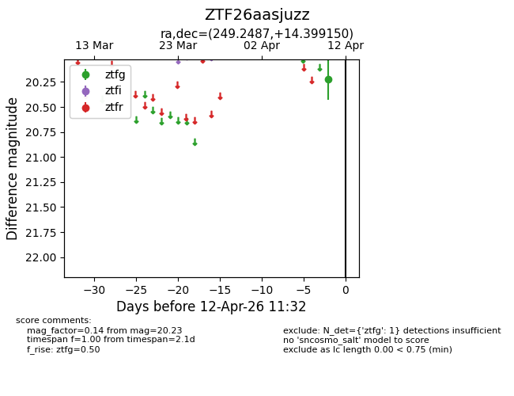
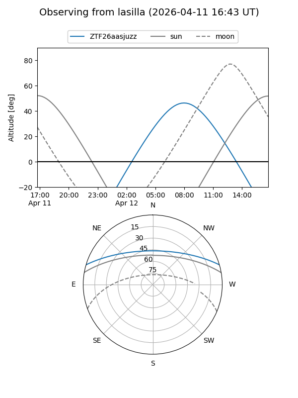
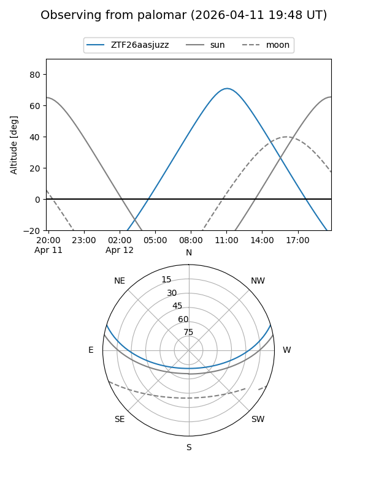

ZTF26aasjuzz
Target ZTF26aasjuzz at 2026-04-12 11:41
Aliases and brokers:
FINK: link
Lasair: link
ALeRCE: link
alt names
ZTF26aasjuzz (ztf,fink_ztf)
Coordinates:
equatorial (ra, dec) = 249.2487,+14.39915
equatorial (HMS+DMS) = 16:36:59.68,+14:23:56.94
galactic (l, b) = (31.2872,+36.19733)
Flags:
Photometry:
last ztfg=20.23
1 ztfg detections
Lightcurve

Visibility


Additional plots